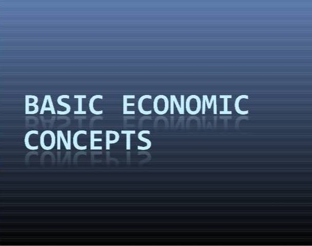
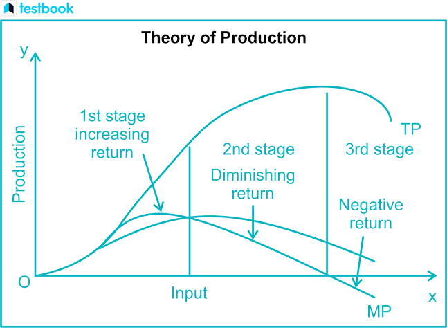
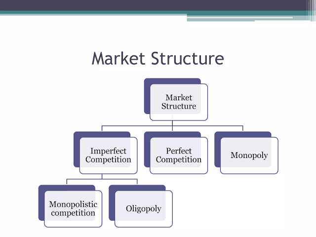
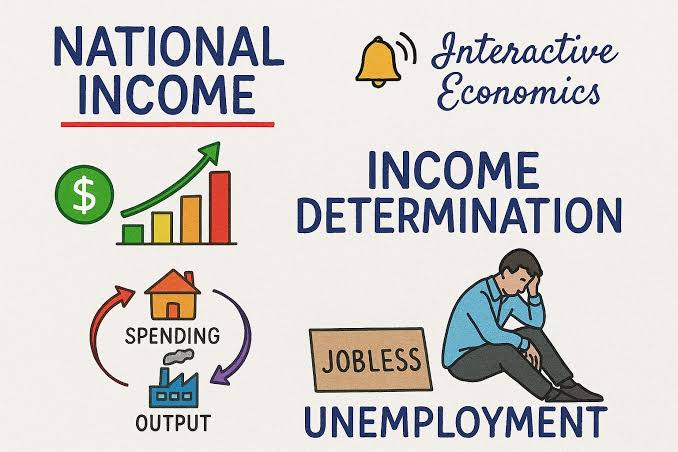

Economics explains how people, firms, and governments make choices when resources are limited.
Introduction to Economics
Economics is the study of how individuals, businesses, and governments make choices about the use of scarce resources. It analyzes the production, distribution, and consumption of goods and services. Economics helps explain how markets work, how prices are determined, and how policies affect living standards and economic growth. It is a social science that studies human behavior in relation to scarcity and decision-making.
Economics is divided into microeconomics and macroeconomics. Microeconomics studies decisions made by individuals and firms, while macroeconomics studies the economy as a whole, including inflation, unemployment, growth, and national income. Both branches are important because they contribute to understanding how economies function and how policies can improve welfare.
Economics helps us understand why choices are necessary when resources are limited.
Basic Economic Concepts
The basic concepts of economics explain how societies allocate scarce resources. These concepts include scarcity, choice, opportunity cost, demand, and supply. Scarcity means that resources are limited while human wants are unlimited. As a result, choices must be made about what to produce, how to produce it, and for whom to produce it. Economics is therefore centered on the problem of allocation and efficient use of resources.
Demand refers to the quantity of a good or service that consumers are willing and able to buy at different prices, while supply refers to the quantity producers are willing to offer. The interaction between demand and supply determines the market price and quantity exchanged.

Basic economic concepts explain how societies make choices under conditions of scarcity.
Scarcity
Scarcity is the central problem of economics. It arises because resources such as land, labour, capital, and time are limited, but human needs and desires are unlimited. This forces individuals and society to decide how best to use available resources. Scarcity leads to competition for resources and affects the allocation of goods and services.
Every economy must make choices about what goods to produce and how to distribute them. Scarcity therefore influences production decisions, consumption patterns, prices, and policy choices.
Scarcity means there is never enough to satisfy all wants, so choices must be made.
Choice
Choice is the act of deciding between alternatives. Because resources are limited, every decision involves trade-offs. A consumer may choose between buying a phone or saving money; a government may choose between spending on education or health care. Choice is therefore a fundamental aspect of economic life.
In economics, choices are assessed by their costs and benefits. Better decisions are those that maximize satisfaction or welfare given the available resources.
Choice is the direct outcome of scarcity and the need to allocate resources wisely.
Opportunity cost
Opportunity cost is the value of the next best alternative that is forgone when a choice is made. It reflects the real cost of decision-making. For example, if a country uses funds to build a road, the opportunity cost may be the schools or hospitals it could have built instead.
Opportunity cost is important because it encourages decision-makers to consider the full consequences of their choices. It is one of the most useful concepts in economics for evaluating alternatives.
Opportunity cost shows what is sacrificed when one option is chosen over another.
Demand and supply
Demand and supply are the forces that determine prices in a market. Demand is the quantity buyers are willing and able to purchase at various prices. Supply is the quantity sellers are willing and able to offer at various prices. When demand exceeds supply, prices tend to rise; when supply exceeds demand, prices tend to fall.
The interaction of demand and supply establishes equilibrium, where the quantity demanded equals the quantity supplied. This concept is central to understanding market behavior and resource allocation.
Demand and supply determine market prices and the quantities exchanged.
Theory of Production
The theory of production explains how firms transform inputs into outputs. It focuses on how resources are combined to produce goods and services efficiently. Production decisions depend on the available factors of production and the technology used. The theory of production is important because it shows how output can be increased through better methods and resource use.
Firms aim to maximize output at the lowest possible cost. Understanding production helps them choose the right combination of labour, capital, and raw materials.

Production theory explains how resources are turned into output for consumption.
Factors of production
The factors of production are the basic resources used to produce goods and services. They include land, labour, capital, and entrepreneurship. Land refers to natural resources; labour is human effort; capital includes machinery, equipment, and infrastructure; entrepreneurship is the ability to organize the other factors and take risks.
These factors are essential to economic activity. Their availability and efficiency influence the level of production and the standard of living in a country.
Factors of production are the building blocks of every economic activity.
Production function
A production function shows the relationship between inputs and output. It describes how much output can be produced from given quantities of labour, capital, and other resources. Economists use production functions to study efficiency, productivity, and the effects of technology on output.
The production function links inputs to the output produced by a firm.
Returns to scale
Returns to scale refer to the change in output when all factors of production are increased proportionately. If output increases by the same proportion, there are constant returns to scale. If output increases by a larger proportion, there are increasing returns to scale, and if output increases by a smaller proportion, there are decreasing returns to scale.
This concept helps firms decide on expansion and efficiency. It also shows how production changes as the scale of operations grows.
Returns to scale show how output responds to a proportional increase in all inputs.
Market Structures
Market structure refers to the organizational characteristics of a market. The main types are perfect competition, monopoly, monopolistic competition, and oligopoly. Each structure has different numbers of sellers, levels of product differentiation, and degrees of control over price. Understanding market structure helps explain pricing behavior and competition.
Firms behave differently depending on the market structure in which they operate. This affects output, pricing, innovation, and efficiency.

Market structures explain how competition and pricing differ across industries.
Perfect competition
Perfect competition is a market structure with many buyers and sellers, homogeneous products, and free entry and exit. No single buyer or seller can influence the market price. Firms in perfect competition are price takers and earn normal profit in the long run.
This model is important because it represents a highly competitive market and helps explain the conditions for efficient allocation of resources.
Perfect competition represents a market with many sellers and no single firm controlling price.
Monopoly
Monopoly exists when one firm dominates the market for a particular product or service, with no close substitutes. The monopolist has significant control over price and output. Monopolies can arise due to legal barriers, ownership of essential resources, or economies of scale.
Monopoly may lead to higher prices and lower output than under competition, although it can also allow large-scale investment in innovation and infrastructure.
Monopoly gives one firm strong control over price and market supply.
Monopolistic competition
Monopolistic competition is a market structure with many firms selling differentiated products. Products may differ in quality, design, branding, or services. Firms have some control over price because their products are not perfect substitutes.
This type of market is common in retail, restaurants, and fashion. Firms compete through advertising, branding, and product differentiation.
Monopolistic competition combines many sellers with product differentiation.
Oligopoly
Oligopoly is a market structure dominated by a small number of large firms. These firms often compete through pricing, advertising, and product innovation. Because each firm’s actions affect the others, there is interdependence in decision-making.
Oligopolies are common in industries such as telecommunications, banking, and automobiles. They can create both competition and strategic behavior.
Oligopoly involves a few powerful firms whose decisions affect each other.
National Income and Macroeconomics
National income measures the total value of goods and services produced in a country over a given period. It is used to assess economic performance and living standards. Macroeconomics studies aggregate variables such as national income, inflation, unemployment, and economic growth. These indicators help governments formulate policies.
A country with rising national income usually has stronger production and employment opportunities. However, growth must also be sustainable and fairly distributed.

National income helps measure the overall health and size of an economy.
GDP
Gross Domestic Product (GDP) is the total market value of all final goods and services produced within a country in a given period. It is the most common measure of economic activity. GDP can be measured using expenditure, income, or output approaches.
GDP measures the total economic output of a country over a period of time.
Inflation
Inflation is a sustained increase in the general price level of goods and services. It reduces the purchasing power of money and affects consumers, businesses, and savers. Inflation may be caused by excess demand, rising production costs, or expansion in the money supply.
Central banks often use interest rates and other policies to control inflation. A moderate level of inflation is sometimes considered normal, but high inflation can be harmful.
Inflation reflects the steady rise in the general price level of an economy.
Unemployment
Unemployment refers to the condition in which people who are willing and able to work cannot find jobs. It is an important macroeconomic problem because it reduces income, lowers output, and creates social stress. Unemployment can be structural, frictional, or cyclical.
Governments often address unemployment through education, job creation, public works, and support for small businesses. Reducing unemployment improves economic welfare and national productivity.
Unemployment shows the extent to which labour resources are not being used productively.
Fiscal and monetary policy
Fiscal policy involves government decisions on taxation and public spending to influence the economy. Monetary policy involves the central bank’s control of money supply and interest rates. Both policies are used to promote economic growth, control inflation, and reduce unemployment.
Governments may increase spending and reduce taxes during recessions, while central banks may lower interest rates to encourage borrowing and investment. In inflationary periods, the opposite measures may be applied.
Fiscal and monetary policy are the main tools used to stabilize the economy.